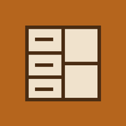

Tu taller, en el iPhone.
Casanova Designer se instala desde Safari y queda con su propio icono en la pantalla de inicio.
Abrir aplicación- Abre la aplicación en Safari.
- Toca Compartir y luego Añadir a pantalla de inicio.
- Si aparece, activa Abrir como app y toca Añadir.
En la primera apertura, espera a que termine de cargar el motor. Después podrás editar y calcular sin conexión. Guarda tus proyectos y descarga una copia JSON para respaldarlos.
El asistente y la interpretación de fotos necesitan internet y una conexión de IA activada por el propietario.